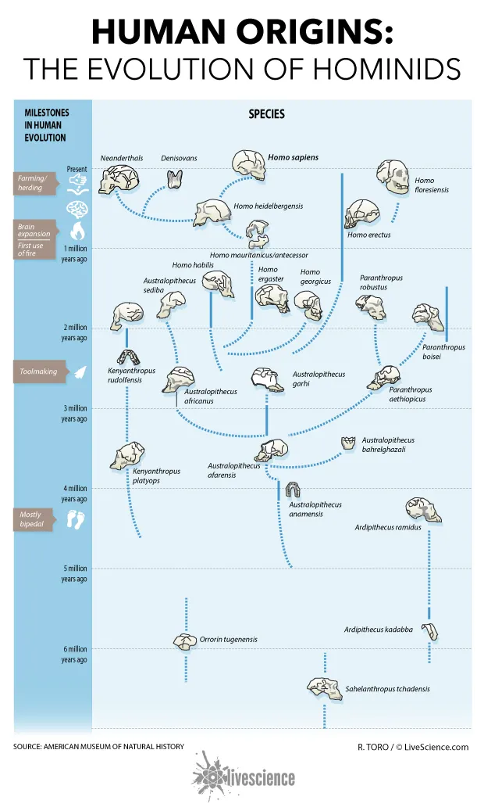

Form, behavior, health, and inference in human evolutionary research
The human evolution area connects archaeological traces, biological outcomes, and quantitative methods. Work here ranges from 3D morphometrics and taphonomy to child growth, long-term ecosystem change, and the interpretation of behavior from indirect evidence.
Main themes. Morphometrics, bone-surface analysis, paleoenvironment, human biology, and formal inference under uncertainty.
What this area is doing
- Using 3D morphometrics to infer action, process, and behavior from archaeological traces.
- Combining statistical inference with human evolutionary questions rather than relying on descriptive pattern matching alone.
- Connecting archaeology, paleoenvironment, and human biology across multiple temporal scales.
- Extending quantitative anthropology into health, growth, and biocultural change.
Representative publications
- Differentiating between cutting actions on bone using 3D geometric morphometrics and Bayesian analyses with implications to human evolution (2018)
- Household Sanitary Conditions Modulate Associations between Birth Mode and Child Growth (2022)
- Urbanization, migration, and indigenous health in Peru (2023)
- Early human impacts and ecosystem reorganization in southern-central Africa (2021)
- The Drone, the Snake, and the Crystal: Manifesting Potency in 3D Digital Replicas of Living Heritage and Archaeological Places (2023)
- Innovative Homo sapiens behaviours 105,000 years ago in a wetter Kalahari (2021)
- Bayesian Statistics in Archaeology (2018)
- Confidence Intervals in the Analysis of Mortality and Survivorship Curves in Zooarchaeology (2016)
Shared area

This area crosses both PI portfolios and highlights the lab’s interest in linking theory, data, and method across human evolutionary research.